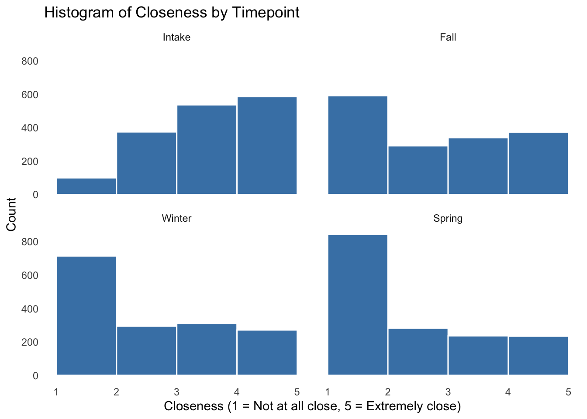
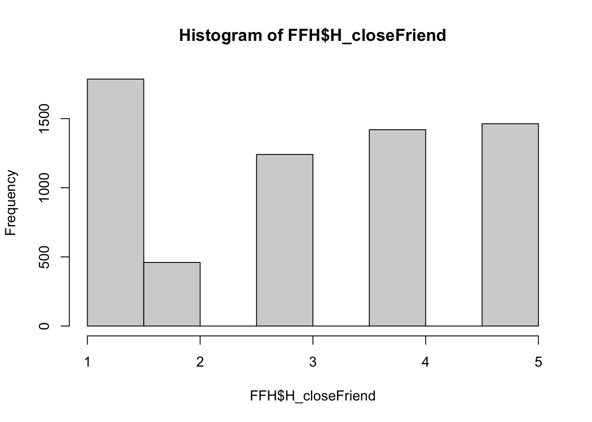
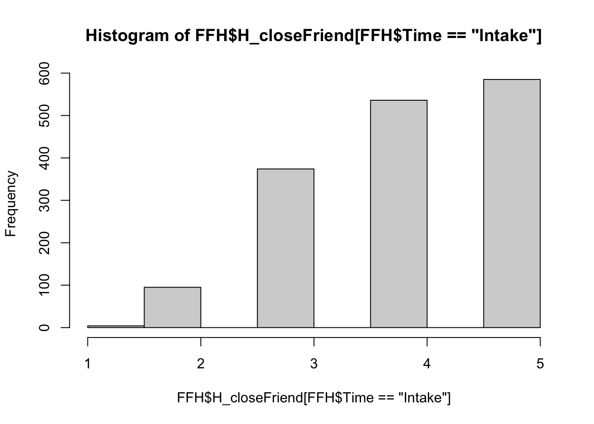
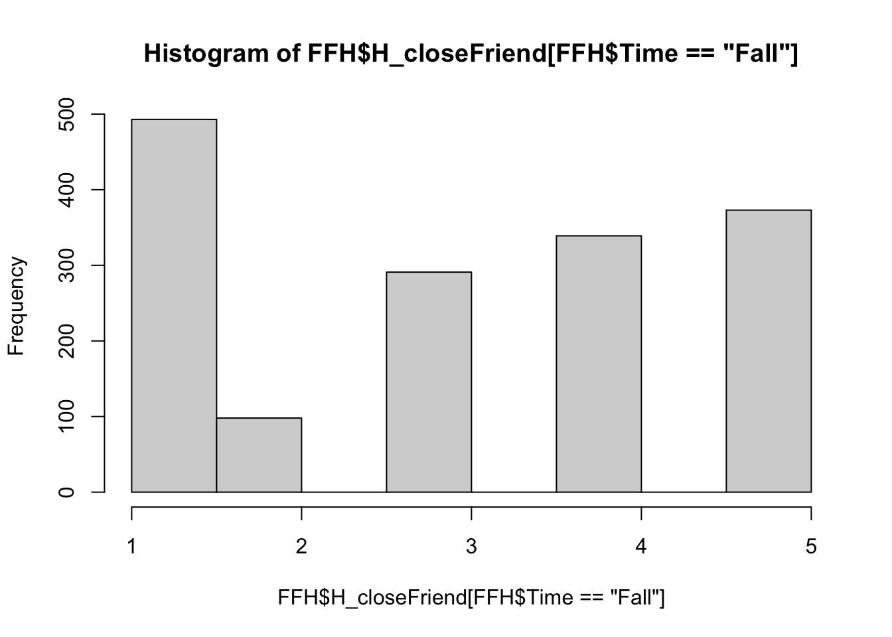
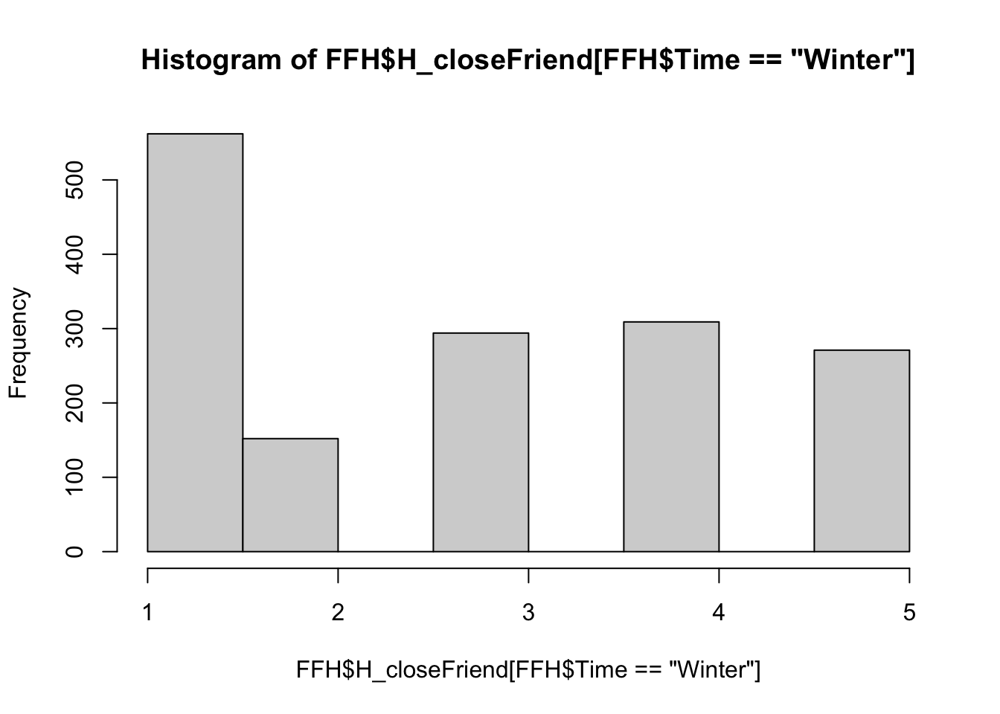
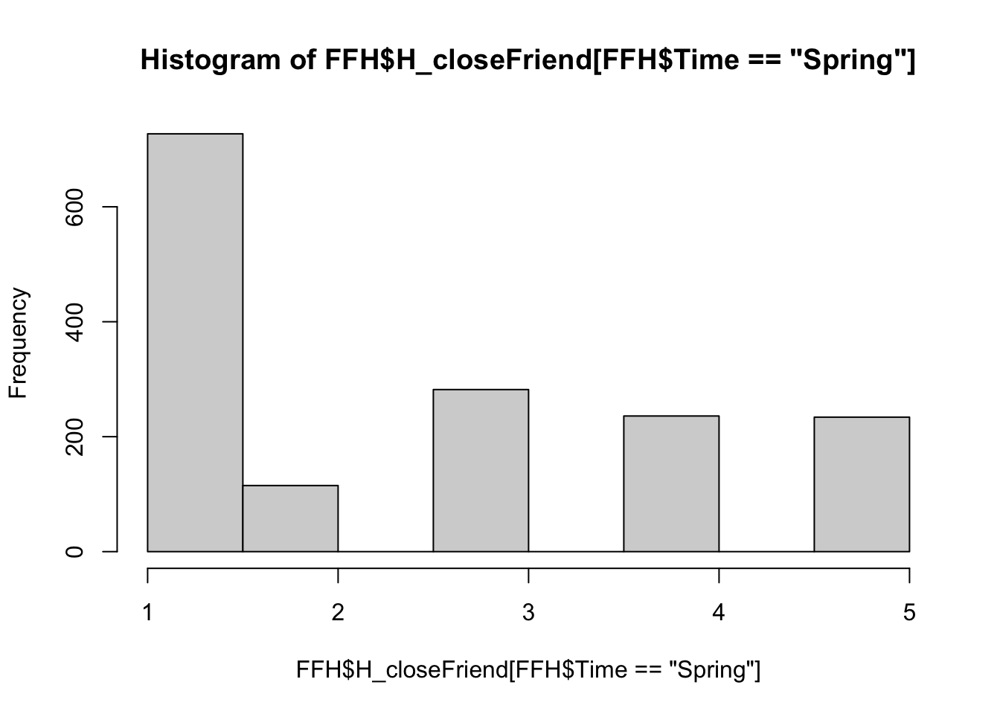
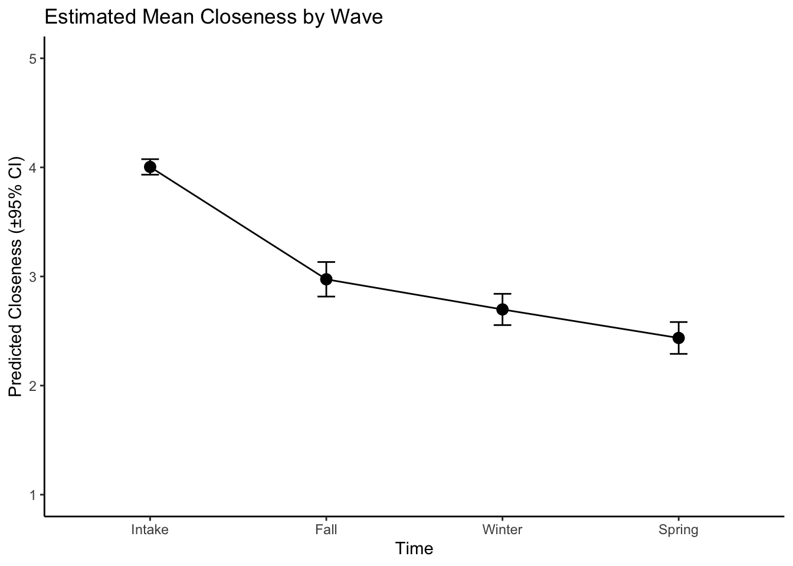
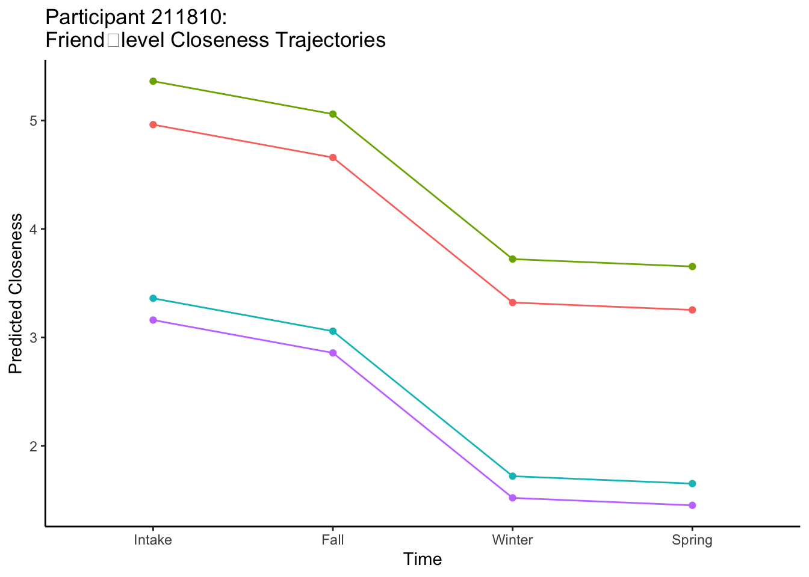
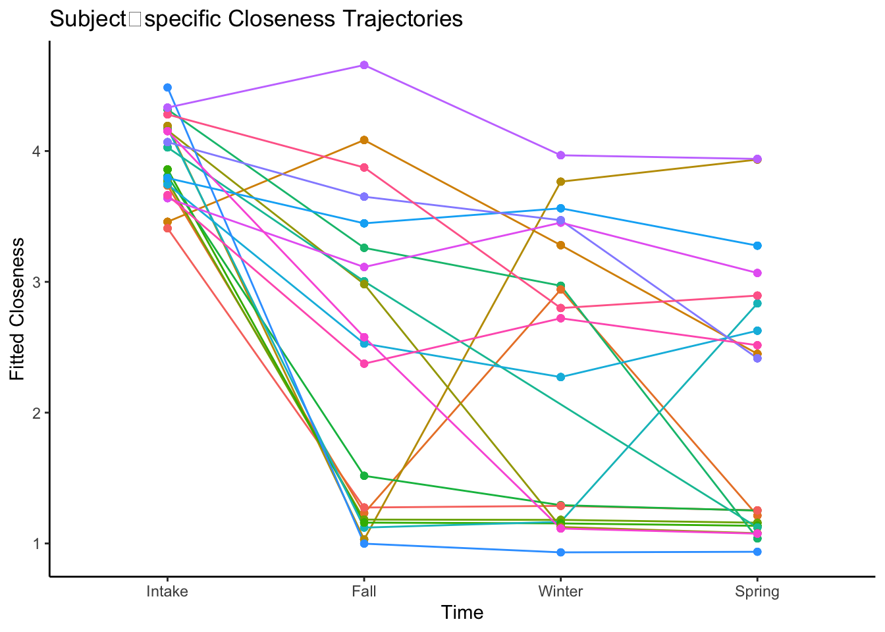
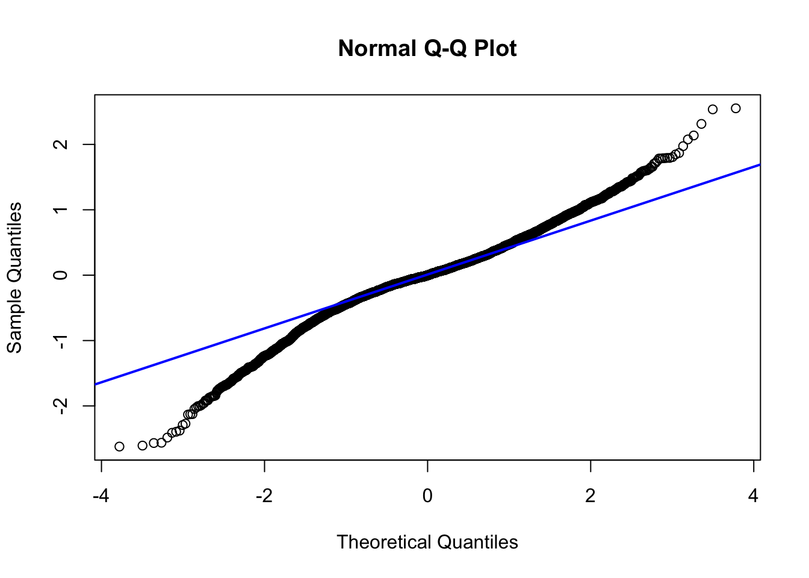

Warning: One or more parsing issues, call `problems()` on your data frame for details,
e.g.:
dat <- vroom(...)
problems(dat)
Rows: 8064 Columns: 169
── Column specification ────────────────────────────────────────────────────────
Delimiter: ","
chr (6): gender_FR, race_FR, distance_mi_cats, race_cat, H_FriendID_, Time
dbl (157): ID, over18, inFSI, age, gender, transgender, international, frien...
num (3): race, selectHomeFriend, listPton
lgl (3): loneliness, winterPlan, composite_Lon_Men
ℹ Use `spec()` to retrieve the full column specification for this data.
ℹ Specify the column types or set `show_col_types = FALSE` to quiet this message.
#You may get an error about parsing issues, but it looks normal to me...
Explain dataset.
The Adversity and Close Relationships Lab surveyed students about their friendships at four different time points throughout their first year of college.
In the summer (Intake) before they moved on campus, we asked them to list up to 7 current friends and how close they are to each friend, how long they’ve been friends, and whether this friend is in college.
Then, in the Fall, Winter, and Spring, we asked if they still consider this person a friend. If they do, we then ask about how close they are to that friend now. (We do not ask about length of friendship or college enrollment for these friends again.)
We are using a few key variables:
ID: This is a given surveyed participants’ unique ID number.
Time: This refers to the time point at which responses were given (i.e., Intake, Fall, Winter, Spring).
H_FriendID_: This is a unique ID for each friend that a participant listed.
H_closeFriend: This refers to how close a participant rated a friend at a given timepoint.
1 = Not At All Close; 5 = Extremely Close
We may also look at a few controls and moderators, which I will include in our dataset for now, and will explain later when we come to it.
Before we dive in, let’s widdle down our dataset FFH (friends from home) to make it easier to explore. We’ll also quickly ensure the data types are appropriate.
Our data is at the Friend/Time level. This means that each row represents how our participant thought of a friend at a given timepoint.
Below, you can print an example of how one participant responded about one friend at each timepoint. Notice how the ID and the Friend ID are both the same in each row, but the time point differs.
You might notice that while we have very few missing values for participant-level variables like age, there are many more missing values for friend-related variables. These missing values arise for two main reasons:
Not all participants listed 7 friends during the Intake survey—some listed fewer, leaving empty friend slots for information about closeness etc.
Not all friends were still considered friends at each time point (Fall, Winter, Spring), so their closeness ratings are missing for those waves
Let’s address each of these points. Luckily, in another file, our data has already noted when a participant hasn’t listed someone in a given slot. So we are going to remove those slots where no one was listed. Let’s see the effect that this had.
We can see that those questions that were ONLY asked in Intake are now only missing for 5 participants – and we can assume that 5 people skipped one of those questions.
When a person listed as a friend at Intake is no longer named in Fall, Winter, or Spring, their closeness rating is left missing by default. However, this missingness is meaningful—it reflects the potential loss of a friendship, which is theoretically important. Rather than removing these cases, we recode their missing closeness values to 1, representing “Not at all close” on our scale. This allows us to retain these friends in the dataset and interpret their absence as a signal of relationship deterioration.
At this stage, any remaining missing values reflect questions that participants skipped. For simplicity, we’ll remove those cases. (Not really the main point of this tutorial)
FFH <- FFH %>%drop_na()
Let’s take a quick look at more information about our data.
n_participants <-n_distinct(FFH$ID)print(paste("Number of unique participants:", n_participants))
[1] "Number of unique participants: 283"
n_friends <-n_distinct(FFH$H_FriendID_)print(paste("Number of unique friends listed:", n_friends))
[1] "Number of unique friends listed: 1594"
FFH %>%ggplot(aes(x = H_closeFriend)) +geom_histogram(binwidth =1, fill ="steelblue", color ="white", boundary =0) +facet_wrap(~Time) +labs(title ="Histogram of Closeness by Timepoint",x ="Closeness (1 = Not at all close, 5 = Extremely close)",y ="Count") +theme_minimal() +theme(panel.grid =element_blank())

lillie.test(FFH$H_closeFriend)
Lilliefors (Kolmogorov-Smirnov) normality test
data: FFH$H_closeFriend
D = 0.19051, p-value < 2.2e-16
So, we have 288 participants and 1,617 unique friends listed. In the table, you’ll see a breakdown of closeness at each time point. These histograms, plus a quick test of normality, show that our outcome is not normally distributed. But, it’s worth making our model and then investigating once the model is set.
Now that we know what we’re working with, we can start to decipher a model to investigate our research question:
What is the effect of Time on Closeness to friends from home?
Because of the nested nature of this data, our biggest contender is a mixed linear regression.
A mixed linear model (also called a multilevel or hierarchical linear model) is a type of regression that accounts for nested or grouped data.
In our case, closeness ratings are repeated over time within each friend, and each friend is nested within a participant. This violates the assumption of independence in traditional linear regression, because observations from the same person or the same friendship are likely to be more similar to each other than to those from others. A mixed linear regression is ideal here because it allows us to model both fixed effects (like time) and random effects (like variation across participants and friendships). This helps us better understand the average trends while also accounting for individual differences in how close someone feels to their friends in general.
But first, we need to check a few assumptions to make sure this is the right model for us.
Checking Assumptions
Let’s see that our outcome variables is roughly normally distributed.
Before fitting a mixed model, it’s good practice to check whether the outcome variable is approximately normally distributed. For larger samples, lillie.test() from the nortest package is a more appropriate option. Still, these tests are sensitive — so it’s just as important to visually inspect the data using a histogram or a Q-Q plot. In our case, the closeness variable is on a 1–5 ordinal scale and shows a skewed, multimodal distribution, especially with a spike at “1” due to our recoding. This outcome isn’t normally distributed, which we expected. That’s okay: normality is more important for model residuals, which we’ll check after fitting the model.
hist(FFH$H_closeFriend)

hist(FFH$H_closeFriend[FFH$Time=="Intake"])

hist(FFH$H_closeFriend[FFH$Time=="Fall"])

hist(FFH$H_closeFriend[FFH$Time=="Winter"])

hist(FFH$H_closeFriend[FFH$Time=="Spring"])

We’ll see how this plays out.
Next, we’re going to decide how to structure our model and whether we want to include random intercepts, random slopes, or both.
Random Intercepts
A random intercept allows each group (e.g., each participant or each friend) to have their own baseline level of the outcome (e.g., closeness). This is a good place to start when your data includes repeated measures or clustering.
In our case, we’re measuring closeness to multiple friends over time, with friends nested within participants. So we could include:
A random intercept for Participant ID, to account for differences in overall closeness across people
A random intercept for Friend ID, to account for some friends being consistently rated higher or lower than others
Let’s make sure that it makes sense to have random intercept for these. We do this by looking at the variance in our outcome variable H_closeFriend within each of these levels.
We’ll start with a random intercept for ID.
library(lme4)model_participant <-lmer(H_closeFriend ~1+ (1| ID), data = FFH)# Extract variance components from the modelvar_components <-as.data.frame(VarCorr(model_participant))# Compute total variancetotal_variance <-sum(var_components$vcov)# Calculate proportion of variance at each levelvar_components$proportion <- var_components$vcov / total_variance# Show proportions in a readable tablevar_components[, c("grp", "vcov", "proportion")]
# For participant-level ICC (model_participant)icc <-0.6069/ (0.6069+1.7330) # ≈ 0.26
There’s no strict cutoff for what counts as “high” random effect variance, but values that explain at least 10% of the total variance (or raise the ICC above 0.10) are generally worth modeling.
This model above shows that participants differed in their average closeness, with a random intercept variance of 0.6069. The residual (within-person) variance was 1.7330, suggesting that a lot of variability still exists within each participant across time or across friends. Within-person variance explains about 26% (ICC = .26) percent of the variance.
Let’s see how that compares when we add a random intercept for within-friend differences.
model_friendXparticipant <-lmer(H_closeFriend ~1+ (1|ID) + (1| ID:H_FriendID_), data = FFH)summary(model_friendXparticipant)
Linear mixed model fit by REML ['lmerMod']
Formula: H_closeFriend ~ 1 + (1 | ID) + (1 | ID:H_FriendID_)
Data: FFH
REML criterion at convergence: 22138.8
Scaled residuals:
Min 1Q Median 3Q Max
-2.43035 -0.73437 0.02939 0.68168 2.53314
Random effects:
Groups Name Variance Std.Dev.
ID:H_FriendID_ (Intercept) 0.1285 0.3584
ID (Intercept) 0.5802 0.7617
Residual 1.6209 1.2731
Number of obs: 6370, groups: ID:H_FriendID_, 1594; ID, 283
Fixed effects:
Estimate Std. Error t value
(Intercept) 3.03205 0.04928 61.53
We can see from our ICC calculation that there are some friend-level differences – that even for the same participant, some friends are consistently closer than others. And yet, given that this explains only about 6% of the variance, we should think carefully about including this in our model. So, let’s compare both.
Moving from 22511→22474 (AIC) and 22532→22501 (BIC) means the friend‐nested model fits better even after penalizing for the extra parameter.
So, even though the friend‐level ICC was “small,” the formal test shows it significantly improves the model. We should therefore keep the friend‐level random intercept.
(1 | ID) lets each participant have their own average closeness.
(1 | ID:H_FriendID_) lets each friend (nested within a participant) also have their own average closeness.
Now, let’s see if we should add any random slopes. A natural next step is to let the effect of Time vary by participant, since some people may drift apart faster or slower than others. We can do that by adding a random slope for Time at the ID level:
# random intercepts for friends, and random intercept + slope of Time for participantstime_slope <-lmer( H_closeFriend ~1+ (1+ Time | ID) + (1| ID:H_FriendID_),data = FFH)
boundary (singular) fit: see help('isSingular')
summary(time_slope)
Linear mixed model fit by REML ['lmerMod']
Formula: H_closeFriend ~ 1 + (1 + Time | ID) + (1 | ID:H_FriendID_)
Data: FFH
REML criterion at convergence: 17891.2
Scaled residuals:
Min 1Q Median 3Q Max
-3.9401 -0.4188 -0.0023 0.4700 3.8316
Random effects:
Groups Name Variance Std.Dev. Corr
ID:H_FriendID_ (Intercept) 0.5194 0.7207
ID (Intercept) 0.0000 0.0000
TimeFall 2.6579 1.6303 NaN
TimeWinter 3.0615 1.7497 NaN 0.76
TimeSpring 3.8124 1.9525 NaN 0.70 0.84
Residual 0.4372 0.6612
Number of obs: 6370, groups: ID:H_FriendID_, 1594; ID, 283
Fixed effects:
Estimate Std. Error t value
(Intercept) 3.97154 0.02433 163.2
optimizer (nloptwrap) convergence code: 0 (OK)
boundary (singular) fit: see help('isSingular')
In our likelihood ratio rest and AIC comparison, we see a huge AIC drop (22474→18011) and highly significant LRT; allowing each participant to have their own Time‐trend dramatically improves the model.
Theoretically, this still makes sense. By adding a random slope for Time, we’re still allowing each participant to have their own trajectory of closeness over the four waves—instead of forcing everyone to change at the same average rate.
Without a time slope: we assume the effect of going from Intake→Fall→Winter→Spring is identical for every person. Any real heterogeneity in trajectories gets lumped into the residual and can bias our time estimate or understate uncertainty.
With a time slope: each person’s change‐over‐time is modeled explicitly. We capture “fast drifters” vs. “stable stayers,” we properly propagate that extra uncertainty into our fixed‐effect test of Time.
Fit Model
Now let’s fit our model. Below, we model…
The effect of Time on closeness H_closeFriend with random effects.
library(lmerTest)
Attaching package: 'lmerTest'
The following object is masked from 'package:lme4':
lmer
The following object is masked from 'package:stats':
step
main_analysis <-lmer(H_closeFriend ~ Time + (1+ Time | ID) +# each participant has their own baseline closeness AND their own Time‐trend (1| ID:H_FriendID_), # each friendship (within participant) has its own baseline closenessdata = FFH)summary(main_analysis)
Linear mixed model fit by REML. t-tests use Satterthwaite's method [
lmerModLmerTest]
Formula: H_closeFriend ~ Time + (1 + Time | ID) + (1 | ID:H_FriendID_)
Data: FFH
REML criterion at convergence: 17480
Scaled residuals:
Min 1Q Median 3Q Max
-4.0237 -0.4102 -0.0027 0.4434 3.9172
Random effects:
Groups Name Variance Std.Dev. Corr
ID:H_FriendID_ (Intercept) 0.4267 0.6532
ID (Intercept) 0.2074 0.4554
TimeFall 1.7141 1.3093 -0.22
TimeWinter 1.5641 1.2507 -0.39 0.61
TimeSpring 1.5153 1.2310 -0.30 0.47 0.65
Residual 0.4244 0.6514
Number of obs: 6370, groups: ID:H_FriendID_, 1594; ID, 283
Fixed effects:
Estimate Std. Error df t value Pr(>|t|)
(Intercept) 4.00413 0.03608 275.77176 110.99 <0.0000000000000002 ***
TimeFall -1.02991 0.08161 279.20311 -12.62 <0.0000000000000002 ***
TimeWinter -1.30645 0.07836 277.60357 -16.67 <0.0000000000000002 ***
TimeSpring -1.56769 0.07717 279.89139 -20.31 <0.0000000000000002 ***
---
Signif. codes: 0 '***' 0.001 '**' 0.01 '*' 0.05 '.' 0.1 ' ' 1
Correlation of Fixed Effects:
(Intr) TimFll TmWntr
TimeFall -0.253
TimeWinter -0.378 0.596
TimeSpring -0.316 0.472 0.632
We can see from this model that each time point is associated with a significant drop in closeness, even with our random effects.
Visualize Model
Let’s visualize the model to further our understanding.
library(emmeans)
Welcome to emmeans.
Caution: You lose important information if you filter this package's results.
See '? untidy'
# 1a. Get estimated marginal meansemm <-emmeans(main_analysis, ~ Time, pbkrtest.limit =6462)# 1b. Turn into a data frameemm_df <-as.data.frame(emm)# 1c. Plotmain_plot<-ggplot(emm_df, aes(x = Time, y = emmean)) +geom_line(group =1) +geom_point(size =3) +geom_errorbar(aes(ymin = lower.CL, ymax = upper.CL), width = .1) +labs(title ="Estimated Mean Closeness by Wave",y ="Predicted Closeness (±95% CI)" ) +ylim(1,5)+theme_classic()print(main_plot)

Let’s take a closer look at the random effects we’ve been modeling.
For that participant, we can now see how closeness to each friend rises or falls over the four waves—making the friend‐level variation explicit.
# 1. Filter for one participantpid <-"211810"df_pid <- FFH %>%filter(ID == pid)# 2. Add model‐predicted closeness (including both random intercepts/slopes)df_pid <- df_pid %>%mutate(pred =predict(main_analysis,newdata = .,re.form =~(1+ Time | ID) + (1| ID:H_FriendID_)))# 3. Plot each friend’s trajectoryggplot(df_pid, aes(x = Time, y = pred, group = H_FriendID_, color = H_FriendID_)) +geom_line() +geom_point() +labs(title =paste0("Participant ", pid, ": \nFriend‐level Closeness Trajectories"),y ="Predicted Closeness") +theme_classic() +theme(legend.position ="none")

We can even take a look at 20 cases from our model to see how individual trajectories differ from the average trend. By randomly sampling 20 participants and plotting their fitted closeness over time (using their own intercepts and slopes), this “spaghetti” plot makes the heterogeneity in change visible—some people’s closeness remains high and stable, others decline sharply, and many show more gradual shifts. This visualization adds value by showing exactly what the random‐slope term captures: it turns a single fixed‐effect line into a cloud of subject‐specific lines, helping us judge whether the average Time effect truly represents our sample or masks important individual differences.
# 2a. pick 20 random IDsset.seed(42)ids20 <-sample(unique(FFH$ID), 20)# 2b. augment data with fitted valuesdf20 <- FFH %>%filter(ID %in% ids20) %>%mutate(pred =predict(main_analysis,newdata = ., # same datare.form =~(1+ Time | ID)) # include participant randoms )# 2c. plotggplot(df20, aes(x = Time, y = pred, group = ID, color = ID)) +geom_line() +geom_point() +labs(title ="Subject‐specific Closeness Trajectories",y ="Fitted Closeness" ) +theme_classic() +theme(legend.position ="none")

Amazing!
Testing Model Validity Further
Let’s run a few more tests to be sure that our model is valid.
Remember we had some abnormality as far as the normality of the distribution of our outcome variable. Let’s see how this effects our model.
What we see below is that in our normality test, the p-value < 2.2×10⁻²² is astronomically small, so we have to reject the null hypothesis of “residuals are normally distributed.”
But with such a large sample (n ≈ 6,462), even tiny departures can give very low p-values. It’s best to:
Inspect a Q-Q plot of the residuals to judge practical importance, and…
Remember that mixed models are fairly robust to modest normality violations—especially with balanced designs and large samples.
In the QQ Plot below, we see that actually, our data follows the line of “normality” alright afterall, with a bit of heavier tails than a perfect normal—i.e. a few residuals are more extreme than you’d expect under strict normality.
With ~6,500 observations, these mild deviations are common and usually not fatal for inference in a mixed model.
Lilliefors (Kolmogorov-Smirnov) normality test
data: residuals(main_analysis)
D = 0.061099, p-value < 0.00000000000000022
# extract residualsres <-residuals(main_analysis)# Q–Q plotqqnorm(residuals(main_analysis))qqline(residuals(main_analysis), col ="blue", lwd =2)

If that’s the case – that we just have a few outliers influencing our model, let’s take a look at the most influential obesrvations and see if our model changes as a result.